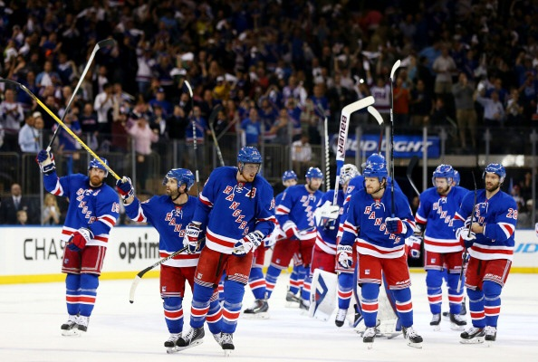

Founded in 1926, the Rangers are one of the Original Six teams in the NHL,
alongside the Boston Bruins, Chicago Blackhawks, Detroit Red Wings, Montreal
Canadiens, and Toronto Maple Leafs. In their nearly 100 year existence the
Rangers have won 4 Stanley Cups with their most recent one being in 1994.
Since then the Rangers have been a consistently above average team,
however, but never good enough to reclaim their crown at the top. In that time
they made 1 Stanley Cup Finals, and the round before that called the Eastern
Conference Finals 5 times. I have also watched them play in person a few
times and they are my favorite hockey team.
This is the 2014 New York Rangers playing a game at Madison Square Garden,
their home arena.
The 2014 season of hockey was the first year I started watching hockey
and also happens to be their best season of hockey since 1994. This team
was one of the best teams in the regular season especially because their
goalie, a man named Henrik Lundqvist, was one of the best players in the
league that season. Once making it into the playoffs they barely made it
through the first 3 rounds by the skin of their teeth winning 4-3 in the first round,
4-3 in the second round and 4-2 in the 3rd round. This however led them to
be in the Stanley Cup Finals against the Los Angeles Kings. This series
went very poorly and the Rangers lost the series 4-1 and haven't made it
to the finals since.

This is the a puck honoring the Rangers for making the Stanley Cup Finals.